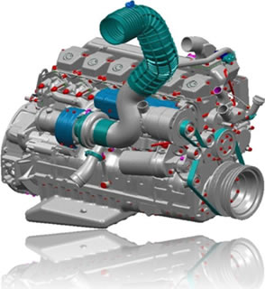

BrasilMaujor é lider no mercado brasileiro de motores baseados em tecnologia diesel.
De 2,5 a 9 litros e de 50 a 375 cv de potência. Segmentos de atuação: veicular, agricola, industrial e marítimo.
Conheça nossa linha completa de motores Copyright ©, 2008 - BrasilMaujor Motores